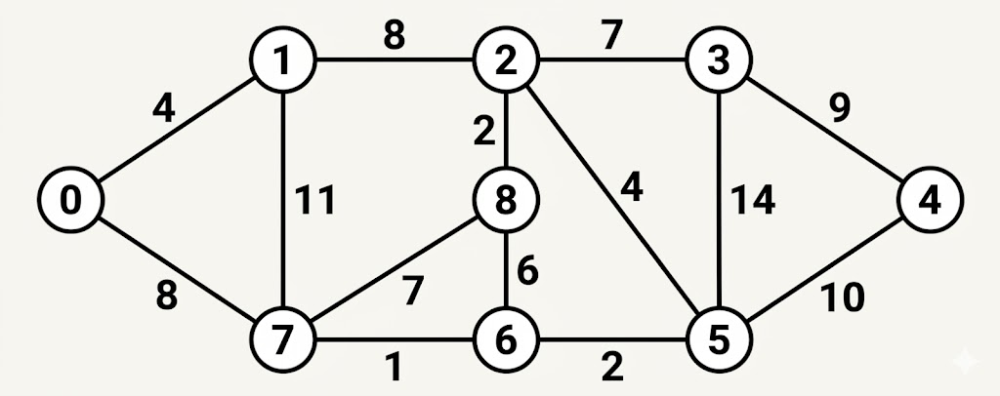

Rajiv Gandhi Proudyogiki Vishwavidyalaya, Bhopal
New Scheme Based On AICTE Flexible Curricula
CSE-Artificial Intelligence and Machine Learning | IV-Semester
Unit I
Definitions of algorithms and complexity, Time and Space Complexity; Time space tradeoff, various bounds on complexity, Asymptotic notation, Recurrences and Recurrences solving techniques, Introduction to divide and conquer technique, example: binary search, merge sort, quick sort, heap sort, strassen’s matrix multiplicationetc, Code tuning techniques: Loop Optimization, Data Transfer Optimization, Logic Optimization, etc.
Previous Years questions appears in RGPV exam.
Q.1) Solve the following recurrence relation using recursion tree method:
$T(n)=2T(n/2)+n$
$T(1)=O(1)$ (June-2025)
Q.2) Show the following recurrence relation using Master's theorem:
$T(n)=2T(n/2)+n \log n$ (June-2025)
Q.3) Find the number of comparisons made by the sequential search for the worst and best case. (June-2025)
Q.4) Apply Quick sort on the array given below:
15, 31, 1, 9, 80, 12, 14, 7, 24 (June-2025)
Q.5) Write an algorithm for the implementation of binary search method. (June-2025)
Q.6) Describe the performance analysis of an algorithm in detail. (June-2023)
Q.7) Consider the following recurrence $T(n)=3T(n/3)+n$ obtain asymptotic bound using substitution method. (June-2023)
Q.8) Write Divide - And - Conquer recursive Quick sort algorithm and analyze the algorithm for average time complexity. (June-2023)
Q.9) Define Time Complexity. Describe different notations used to represent these complexities. (June-2024, Nov-2023)
Q.10) Write an algorithm for Strassen's matrix multiplication and analyze the complexity of algorithm. (June-2024)
Q.11) Show that the average case time complexity of quick sort is O(nlogn). (June-2024)
Q.12) Solve the following recurrence relation
$T(n)=7T(n/2)+cn^{2}$ (Dec-2024)
Q.13) Show how quick sort sorts the following sequence of keys 65, 70, 75, 80, 85, 60, 55, 50, 45. Solve the recurrence relation of quick sort using substitution method. (Dec-2024)
Q.14) Explain merge sort algorithm and find the complexity of the algorithm. (Dec-2024)
Q.15) Write brief note on: Logic Optimization. (Dec-2024)
Q.16) Write brief note on: Data Transfer Optimization. (June-2024, Dec-2024)
Q.17) Discuss Strassen's matrix multiplication as well as classical $O(n^{2})$ one. Determine when Strassen's method outperforms the classical one. (Nov-2023)
Q.18) Explain partition exchange sort algorithm and trace this algorithm for $n=8$ elements: 24, 12, 35, 23, 45, 34, 20, 48. (Nov-2023)
Q.19) Write short notes on: Data Transfer Optimization and Logic Optimization. (Nov-2023)
Unit II
Study of Greedy strategy, examples of greedy method like optimal merge patterns, Huffman coding, minimum spanning trees, knapsack problem, job sequencing with deadlines, single source shortest path algorithm etc. Correctness proof of Greedy algorithms.
Previous Years questions appears in RGPV exam.
Q.1) List various problems that can be solved using the Greedy algorithm approach. (June-2025)
Q.2) Write Kruskal's algorithm to find MST for a given graph. Also discuss about its time complexity. (June-2025)
Q.3) Write Dijkstra's Algorithm for the solution of single source shortest path problem. (June-2025)
Q.4) Explain fractional Knapsack problem in detail. (June-2025)
Q.5) Construct the minimum spanning tree for the given graph using Kruskal's Algorithm:
![An undirected weighted graph with 7 vertices labeled 1 through 7. The edges and their corresponding weights are as follows: Edge between node 1 and 2 with weight 28; Edge between node 1 and 6 with weight 10; Edge between node 2 and 3 with weight 16; Edge between node 2 and 7 with weight 14; Edge between node 3 and 4 with weight 12; Edge between node 4 and 5 with weight 22; Edge between node 4 and 7 with weight 18; Edge between node 5 and 6 with weight 25; Edge between node 5 and 7 with weight 24.](../../sem-IV-papers/AIML/al-402/ques-diagrams/Q.6b-june-2025.png)
(June-2025)
Q.6) Apply the Greedy method to solve Knapsack problem for given instance. Where $n=3$, $m=20$, $(P_{1}, P_{2}, P_{3})=(25,24,15)$ and weight $(w_{1}, w_{2}, w_{3})=(18,15,10)$. (June-2023)
Q.7) Write Kruskal's Algorithm. Generate the MCST for the graph given in Figure 1 by applying Kruskal's algorithm.

(June-2023)
Q.8) Obtain a set of optimal Huffman codes for the seven messages (M1, ..., M7) with relative frequencies $(q1,...,q7)=(4,5,7,8,10,22,15).$ Draw the decode tree for this set of codes. (June-2023)
Q.9) Write short notes on: Correctness proof of Greedy algorithms. (June-2023)
Q.10) Describe in detail job sequencing with deadlines problem. Let $n=4, (P_{1}, P_{2}, P_{3}, P_{4}) = (100, 10, 15, 27)$ and $(d_{1}, d_{2}, d_{3}, d_{4}) = (2, 1, 2, 1)$ find the optimal solution for the given values. (June-2024)
Q.11) Write an algorithm for single source shortest path and apply it for the following graph.

(June-2024)
Q.12) Discuss the importance of proving both the greedy choice property and the optimal substructure property for establishing the correctness of a greedy algorithm. (June-2024)
Q.13) Write an algorithm to solve Knapsack problem using Greedy technique. Find the optimal solution to the Knapsack instance $n=7$, $m=15$, $(P_{1}, P_{2}, P_{3}...P_{7}) = (10, 5, 15, 7, 6, 18, 3)$, $(W_{1}, W_{2}, W_{3}...W_{7}) = (2, 3, 5, 7, 1, 4, 1)$. (June-2024)
Q.14) Write short notes on: Huffman coding. (June-2024)
Q.15) Write an algorithm for single source shortest path and apply it for the following graph.

(Dec-2024)
Q.16) How the Optimal Merge Pattern algorithm works? Explain with a suitable example. (Dec-2024)
Q.17) Apply Kruskal's algorithm to find the minimum spanning tree of a graph with weighted edges.
![An undirected weighted graph with 9 vertices labeled 0 through 8. The edges and their corresponding weights are as follows: Edge 0 to 1 with weight 4; Edge 0 to 7 with weight 8; Edge 1 to 2 with weight 8; Edge 1 to 7 with weight 11; Edge 2 to 3 with weight 7; Edge 2 to 5 with weight 4; Edge 2 to 8 with weight 2; Edge 3 to 4 with weight 9; Edge 3 to 5 with weight 14; Edge 4 to 5 with weight 10; Edge 5 to 6 with weight 2; Edge 6 to 7 with weight 1; Edge 6 to 8 with weight 6; and Edge 7 to 8 with weight 7.](../../sem-IV-papers/AIML/al-402/ques-diagrams/Q.3b-dec-3a-june-2024.png)
(Dec-2024)
Q.18) Compute the optimal solution for knapsack problem using greedy method $N=5$, $M=10$, $(p_{1}, p_{2}, p_{3}, p_{4}, p_{5}) = (10, 15, 10, 12, 8)$, $(w_{1}, w_{2}, w_{3}, w_{4}, w_{5}) = (3, 3, 2, 5, 1)$. (Dec-2024)
Q.19) Write short notes on: Optimal merge patterns. (Dec-2024)
Q.20) State the Job-Sequencing with deadlines problem. Find an optimal sequence to the $n=5$ Jobs where profits $(P_{1},P_{2},P_{3},P_{4},P_{5})=(20,15,10,5,1)$ and deadlines $(d_{1},d_{2},d_{3},d_{4},d_{5})=(2,2,1,3,3).$ (Nov-2023)
Q.21) Explain prim's and Kruskal's algorithm shown in figure with the following example.

(Nov-2023)
Q.22) Differentiate between prim's algorithm and Kruskal's algorithm. (Nov-2023)
Unit III
Concept of dynamic programming, problems based on this approach such as 0/1 knapsack, multistage graph, reliability design, Floyd-Warshall algorithm etc.
Previous Years questions appears in RGPV exam.
Q.1) What is 0/1 Knapsack problem? Is Greedy method effective to solve 0/1 Knapsack problem. (June-2025)
Q.2) Is there anything common between dynamic programming and divide and conquer? What is the main difference between the two? (June-2025)
Q.3) Solve the following 0/1 Knapsack problem using dynamic programming $P=(11,21,31,33)$, $W=(2,12,23,15),$ $C=42$, $n=4.$ (June-2023)
Q.4) Explain Floyd Warshall algorithm problem with the graph given in figure.
(June-2023)
Q.5) Explain Floyd Warshall algorithm problem with the graph given in figure.
(June-2024)
Q.6) What is multistage graph problem? Discuss its solution based on dynamic programming approach. Also give a suitable algorithm and find its computing time? (June-2023, Dec-2024, Nov-2023)
Q.7) Write short notes on: Reliability design. (June-2023)
Q.8) Describe how dynamic programming can be used to solve reliability design problems. (June-2024)
Q.9) Design a three stage system with device types $D_{1}$, $D_{2}$ and $D_{3}$. The costs are \$30, \$15 and \$20 respectively. The Cost of the system is to be no more than \$105. The reliability of each device is 0.9, 0.8 and 0.5 respectively. (Dec-2024, Nov-2023)
Q.10) A thief enters a house for robbing. Thief can carry a maximum weight of 6kg into his bag. There are 3 items in the house with weights $(w_{1},w_{2},w_{3})=(2,3,4)$ and profits $(p_{1},p_{2},p_{3})=(1,2,5)$ what items should thief can take will get the maximum profit? He either takes or leaves the item. (Nov-2023)
Q.11) Solve the following instance of $0/1$ Knapsack problem using Dynamic programming. $n=3$; $(W_{1}, W_{2}, W_{3}) = (3, 5, 7)$; $(P_{1},P_{2},P_{3})=(3,7,12)$; $M=4.$ (Nov-2023)
Unit IV
Backtracking concept and its examples like 8 queen’s problem, Hamiltonian cycle, Graph colouring problem etc. Introduction to branch & bound method, examples of branch and bound method like travelling salesman problem etc. Meaning of lower bound theory and its use in solving algebraic problem, introduction to parallel algorithms.
Previous Years questions appears in RGPV exam.
Q.1) Obtain any two solutions to 4-queens problem. Establish the relationship between them. (June-2025)
Q.2) Solve the following instance of Knapsack problem by using the branch and bound technique:
| Items | W | P |
|---|---|---|
| $I_1$ | 9 | 15 |
| $I_2$ | 6 | 6 |
| $I_3$ | 7 | 5 |
| $I_4$ | 2 | 1 |
$W=16$ (June-2025)
Q.3) Find a solution to the 8-Queens problem using backtracking strategy. Draw the solution space using necessary bounding function. (June-2023)
Q.4) Solve the traveling salesperson problem using branch and bound technique.
| A | B | C | |
|---|---|---|---|
| A | 0 | 3 | 4 |
| B | 6 | 0 | 4 |
| C | 3 | 5 | 0 |
(June-2023)
Q.5) What is Backtracking? Discuss any one problem solved by backtracking. Also give its advantages and disadvantages. (June-2023)
Q.6) Write short notes on: Graph coloring problem. (June-2023)
Q.7) Describe graph coloring problem and write an algorithm for m-coloring problem. (June-2024)
Q.8) Explain the 4-queen problem using backtracking algorithm. (June-2024)
Q.9) Explain the method of reduction to solve travelling sales person problem using branch and bound. (June-2024)
Q.10) Briefly explain the Hamiltonian cycle using backtracking with a example. (Dec-2024)
Q.11) Solve the following instance of travelling sales person problem using Branch Bound.
| $\infty$ | 20 | 30 | 10 | 11 |
| 15 | $\infty$ | 16 | 4 | 2 |
| 3 | 5 | $\infty$ | 2 | 4 |
| 19 | 6 | 18 | $\infty$ | 3 |
| 16 | 4 | 7 | 16 | $\infty$ |
(Dec-2024)
Q.12) Write short notes on: 8 queen's problem using backtracking. (Dec-2024)
Q.13) Write an algorithm to determine the Hamiltonian cycle in a given graph using backtracking. (Nov-2023)
Q.14) Solve the following instance of travelling sales person problem using Least Cost Branch Bound.

(Nov-2023)
Q.15) Construct state space tree for solving four queen's problem using backtracking. (Nov-2023)
Unit V
Advanced tree and graph algorithms, NP-hard and NP-complete problems, Approximations Algorithms, Data Stream Algorithms, Introduction to design and complexity of Parallel Algorithms.
Previous Years questions appears in RGPV exam.
Q.1) Explain the class NP-complete with example. (June-2025)
Q.2) There are 8, 15, 13 and 14 number of nodes in 4 different trees. Which of them could have formed a Full Binary Tree? (June-2025)
Q.3) Compare and contrast NP-Hard and NP-Complete classes. (June-2023, June-2024)
Q.4) Create a B-tree for the following list of elements L= {86, 50, 40, 3, 94, 10, 70, 90, 110, 113, 116} given minimization factor $t=3,$ minimum degree $=2$ and maximum degree = 5. (June-2023)
Q.5) Write short notes on: Design and complexity of Parallel Algorithms. (June-2023)
Q.6) What are B-trees? How are they created? Explain with a suitable example. (June-2024)
Q.7) Write short notes on: Data Stream Algorithms. (June-2024)
Q.8) Write short notes on: Approximations Algorithms. (June-2024, Nov-2023)
Q.9) Explain the P, NP-Hard and NP-complete classes? Give the relation between them. (Dec-2024, Nov-2023)
Q.10) Explain the purpose of design and complexity of parallel algorithms in detail. (Dec-2024)
Q.11) Show the inorder, preorder and postorder for the following tree

(Nov-2023)
Q.12) Write short notes on: Parallel algorithms. (Nov-2023)